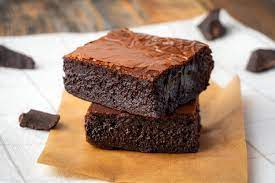

Brownie Tarifi
Mükemmel brownieler yapmanız için ihtiyacınız olan tek tarif bu
Kaç Kişilik: 8 Hazırlama Süresi: 15 dakika Pişirme Süresi: 30 dakika
Brownie için gereken malzemeler:
- 300 gram bitter çikolata (iri parçalanmış)
- 3 adet yumurta
- 150 gram tereyağı (10 yemek kaşığı)
- 1 su bardağı toz şeker
- 1 su bardağı un
- 1 paket vanilya
Brownie nasıl yapılır:
- Tereyağını minik bir sos tenceresinin içerisinde eritin.
- Eridiği gibi ocaktan alın ve tereyağınız henüz sıcakken parça parça böldüğünüz çikolataları içerisine aktarın. Tereyağının sıcağı ile erimesini sağlayın.
- Ardından tereyağlı çikolata karışımını oda sıcaklığında soğuması için bir kenara alın.
- Bir kabın içerisine yumurtaları alın, şekeri de ilave ederek güzelce çırpın.
- Çırpılan şekerle yumurtaların üzerine azar azar tereyağlı çikolatalı karışımı aktarın ve karıştırmaya devam edin.
- Tüm karışımı ekleyip karıştırdıktan sonra un ve vanilyayı eleyerek üzerine ilave edin.
- Spatula yardımıyla brownie harcını tüm malzemeler birleşinceye dek katlayarak karıştırın.
- Ardından yağlanmış ya da pişirme kağıdı serilmiş 20 cm'lik kare kek kalıbına hazırladığınız karışımı aktarın. Üst kısmını spatulayla düzeltin.
- 160 derecede önceden ısıtılmış fansız fırında 30-35 dakika kadar pişirin. Üzeri hafif çatlak bir görünüm alınca fırından çıkarın ve oda sıcaklığında en az 1 saat kadar dinlendirin.
- Dinlendikçe kıvamı güzelleşecektir. Dinlendikten sonra dilimleyerek servis edebilirsiniz. Afiyet olsun!

Afiyet olsun